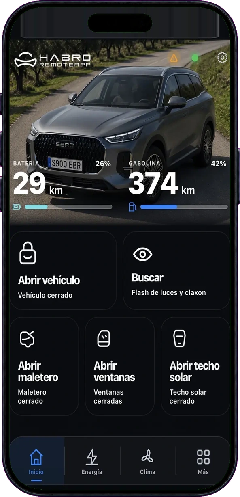
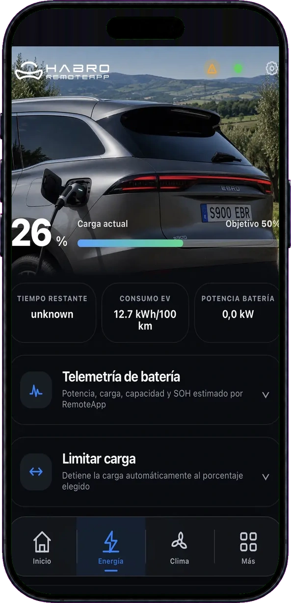
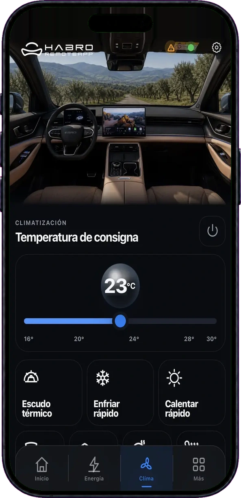
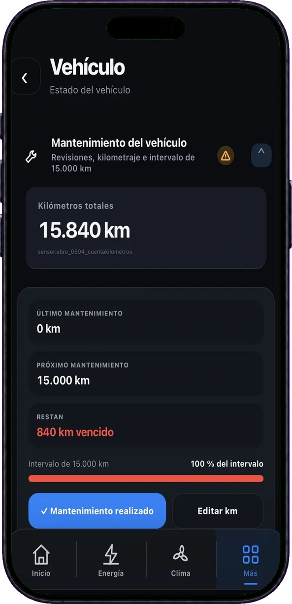
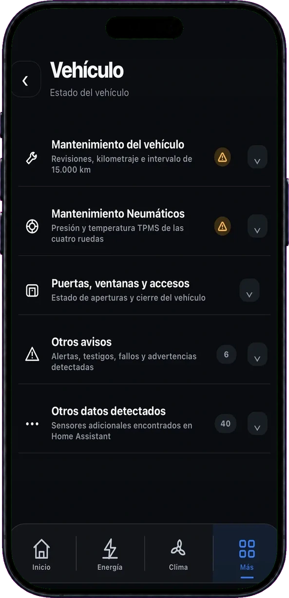

InicioEstado, autonomía y accesos
Controla el coche, automatiza lo que se repite y conecta vehículo, casa y energía desde una sola experiencia.

HABRO concentra las acciones que usas de verdad para que puedas actuar mientras caminas hacia tu EBRO.
Inicio, energía, climatización, vehículo y mantenimiento siguen la misma lógica visual para que siempre sepas dónde estás y qué puedes hacer.



Ubicación, día, hora y contexto meteorológico se combinan para ejecutar acciones cuando realmente tienen sentido.
Casa, trabajo o cualquier ubicación con radio configurable.
Crea acciones diferentes para cada rutina semanal.
Puede decidir en función del riesgo de escarcha previsto.
Siri y Google Assistant disponibles; Alexa, próximamente.
La voz deja de ser un añadido y se convierte en una forma natural de usar el coche cuando tienes las manos ocupadas o ya vas caminando hacia él.

Pídeselo a Siri o Google Assistant. También puedes hacerlo desde Apple Watch.
Siri · Google Assistant · Apple WatchPrepara el habitáculo sin sacar el móvil del bolsillo.
Siri · Google AssistantHABRO puede activar luces y claxon para ayudarte a localizarlo.
Siri · Google AssistantRecibe avisos por WhatsApp o mediante notificaciones Push de Home Assistant y decide qué alertas quieres tener activas.
Las ventanillas llevan abiertas 5 minutos.
Puertas, ventanas, techo, maletero o capó abiertos.
Presión baja detectada en los neumáticos.
Nivel bajo de gasolina o de la batería de alta tensión.
Al superar la velocidad máxima que hayas configurado.
Inicio y finalización de cada sesión de carga.
Confirmación cuando se ejecuta una climatización programada.
Avisos de mantenimiento del motor y los neumáticos.
WhatsApp utiliza el servicio externo CallMeBot y puede sufrir demoras. Para avisos críticos se recomienda Push de Home Assistant.
HABRO relaciona el EBRO con la producción solar, el consumo de casa, la red y tu tarifa eléctrica para darte contexto, no solo cifras.
Compara gasolina y electricidad con métricas totales y de los últimos 100 km, sin mezclar dos formas de energía que se comportan de manera distinta.
Identifica cuánto consume el coche cuando carga en casa o en la calle.
HABRO incorpora herramientas específicas para energía, recarga, consumos y movilidad dentro del mismo entorno.
Relaciona el precio de la energía con la carga del coche y el consumo de tu vivienda.
Disponible en betaLocaliza cargadores, consulta potencia y conector y prepara la navegación.
DisponiblePlanifica trayectos teniendo en cuenta autonomía, recarga y paradas.
En desarrolloOrienta la carga del coche hacia la producción fotovoltaica disponible.
Disponible en betaCompara gasolina, electricidad y costes en euros con medias totales y de los últimos 100 km.
DisponibleHABRO localiza puntos próximos, muestra distancia, potencia y conector y te permite preparar la navegación hasta el cargador elegido.
Planifica el trayecto para priorizar los kilómetros eléctricos frente a la gasolina y localiza puntos de recarga durante el viaje cuando los necesitas.
En desarrolloMantenimiento, kilometraje, próximos hitos, presión y temperatura de neumáticos y avisos del vehículo quedan reunidos en HABRO.
Kilometraje, intervalos y próxima revisión.

TPMS, puertas, ventanas, accesos y avisos detectados.

Estamos preparando el primer acceso a HABRO. Descubre lo que viene y pregúntale a BRO todo lo que quieras saber.